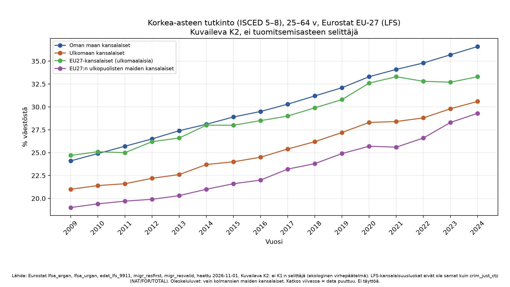
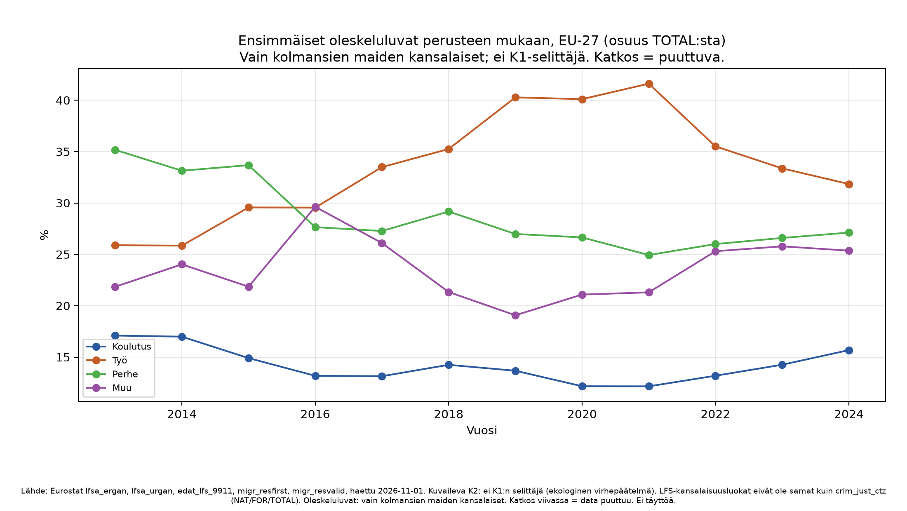

Kaaviot (EU-27)



Rajoite
| rajoite |
|---|
| K2 on kuvaileva eikä sitä yhdistetä K1:n tuomitsemisasteisiin selittäjäksi (ekologinen virhepäätelmä). LFS (lfsa_ergan, lfsa_urgan, edat_lfs_9911) on otantatutkimus; citizen-koodit NAT/FOR/EU27_2020_FOR/NEU27_2020_FOR. crim_just_ctz erottaa vain NAT/FOR/TOTAL. Oleskeluluvat (migr_resfirst, migr_resvalid) koskevat kolmansien maiden kansalaisia, ei EU-kansalaisia. |
S2 ja S7 (K1-herkkyys): ei dataa
Dokumentoitu syineen; ei lasketa arvauksella.
| analyysi | tila | syy | citizen_unique | unit_unique | viite |
|---|---|---|---|---|---|
| S2 | ei_dataa | crim_just_ctz.citizen unique = FOR, NAT, TOTAL. EU-sisäisiä ja kolmansien maiden kansalaisia ei voi erottaa rikososoittajasta. | FOR,NAT,TOTAL | NR,P_HTHAB | PREREGISTRATION S2; eu_vs_kolmas_rajoite.csv; herkkyys_S1_S7.csv |
| S7 | ei_dataa | Rikosaineistossa ei ole naturalisaatiota tai entistä kansalaisuutta. Tuomittuja ei voi siirtää NAT→FOR ilman oletusta; S7 jätetään rajoitteeksi. | FOR,NAT,TOTAL | NR,P_HTHAB | PREREGISTRATION S7; herkkyys_S1_S7.csv |
Otos tauluista
Työllisyys
| geo | vuosi | citizen | arvo | OBS_FLAG | maa |
|---|---|---|---|---|---|
| AT | 2009 | EU27_2020_FOR | 68.1 | NaN | Itävalta |
| AT | 2010 | EU27_2020_FOR | 69.5 | NaN | Itävalta |
| AT | 2011 | EU27_2020_FOR | 69.3 | NaN | Itävalta |
| AT | 2012 | EU27_2020_FOR | 71.1 | NaN | Itävalta |
| AT | 2013 | EU27_2020_FOR | 71.8 | NaN | Itävalta |
| AT | 2014 | EU27_2020_FOR | 72.9 | NaN | Itävalta |
| AT | 2015 | EU27_2020_FOR | 72.5 | NaN | Itävalta |
| AT | 2016 | EU27_2020_FOR | 72.8 | NaN | Itävalta |
| AT | 2017 | EU27_2020_FOR | 74.4 | NaN | Itävalta |
| AT | 2018 | EU27_2020_FOR | 73.8 | NaN | Itävalta |
| AT | 2019 | EU27_2020_FOR | 74.2 | NaN | Itävalta |
| AT | 2020 | EU27_2020_FOR | 73.4 | NaN | Itävalta |
| AT | 2021 | EU27_2020_FOR | 73.1 | b | Itävalta |
| AT | 2022 | EU27_2020_FOR | 76.2 | NaN | Itävalta |
| AT | 2023 | EU27_2020_FOR | 76.4 | NaN | Itävalta |
| AT | 2024 | EU27_2020_FOR | 76.5 | NaN | Itävalta |
| BE | 2009 | EU27_2020_FOR | 59.4 | NaN | Belgia |
| BE | 2010 | EU27_2020_FOR | 62.2 | NaN | Belgia |
| BE | 2011 | EU27_2020_FOR | 62.0 | b | Belgia |
| BE | 2012 | EU27_2020_FOR | 61.7 | NaN | Belgia |
| BE | 2013 | EU27_2020_FOR | 60.6 | NaN | Belgia |
| BE | 2014 | EU27_2020_FOR | 62.5 | NaN | Belgia |
| BE | 2015 | EU27_2020_FOR | 63.0 | NaN | Belgia |
| BE | 2016 | EU27_2020_FOR | 64.3 | NaN | Belgia |
| BE | 2017 | EU27_2020_FOR | 65.0 | b | Belgia |
Koulutus (ote)
| geo | vuosi | citizen | isced11 | arvo | OBS_FLAG | maa |
|---|---|---|---|---|---|---|
| AT | 2009 | EU27_2020_FOR | ED0-2 | 12.4 | NaN | Itävalta |
| AT | 2010 | EU27_2020_FOR | ED0-2 | 12.9 | NaN | Itävalta |
| AT | 2011 | EU27_2020_FOR | ED0-2 | 12.1 | NaN | Itävalta |
| AT | 2012 | EU27_2020_FOR | ED0-2 | 11.3 | NaN | Itävalta |
| AT | 2013 | EU27_2020_FOR | ED0-2 | 12.9 | NaN | Itävalta |
| AT | 2014 | EU27_2020_FOR | ED0-2 | 11.9 | b | Itävalta |
| AT | 2015 | EU27_2020_FOR | ED0-2 | 11.0 | NaN | Itävalta |
| AT | 2016 | EU27_2020_FOR | ED0-2 | 11.3 | NaN | Itävalta |
| AT | 2017 | EU27_2020_FOR | ED0-2 | 12.1 | NaN | Itävalta |
| AT | 2018 | EU27_2020_FOR | ED0-2 | 12.4 | NaN | Itävalta |
| AT | 2019 | EU27_2020_FOR | ED0-2 | 11.9 | NaN | Itävalta |
| AT | 2020 | EU27_2020_FOR | ED0-2 | 11.9 | NaN | Itävalta |
| AT | 2021 | EU27_2020_FOR | ED0-2 | 12.2 | b | Itävalta |
| AT | 2022 | EU27_2020_FOR | ED0-2 | 12.5 | NaN | Itävalta |
| AT | 2023 | EU27_2020_FOR | ED0-2 | 12.4 | NaN | Itävalta |
| AT | 2024 | EU27_2020_FOR | ED0-2 | 11.6 | NaN | Itävalta |
| BE | 2009 | EU27_2020_FOR | ED0-2 | 36.5 | NaN | Belgia |
| BE | 2010 | EU27_2020_FOR | ED0-2 | 34.4 | NaN | Belgia |
| BE | 2011 | EU27_2020_FOR | ED0-2 | 33.9 | NaN | Belgia |
| BE | 2012 | EU27_2020_FOR | ED0-2 | 33.4 | NaN | Belgia |
| BE | 2013 | EU27_2020_FOR | ED0-2 | 32.8 | NaN | Belgia |
| BE | 2014 | EU27_2020_FOR | ED0-2 | 31.7 | b | Belgia |
| BE | 2015 | EU27_2020_FOR | ED0-2 | 30.2 | NaN | Belgia |
| BE | 2016 | EU27_2020_FOR | ED0-2 | 28.9 | NaN | Belgia |
| BE | 2017 | EU27_2020_FOR | ED0-2 | 26.1 | b | Belgia |
Oleskeluluvat (ensimmäiset)
| geo | vuosi | EDUC | EMP | FAM | OTH | TOTAL | osuus_EDUC | osuus_EMP | osuus_FAM | osuus_OTH |
|---|---|---|---|---|---|---|---|---|---|---|
| AT | 2008 | 2853.0 | 3096.0 | 14400.0 | 1434.0 | 21783.0 | 0.130974 | 0.142129 | 0.661066 | 0.065831 |
| AT | 2009 | 3233.0 | 2692.0 | 14572.0 | 7538.0 | 28035.0 | 0.115320 | 0.096023 | 0.519779 | 0.268878 |
| AT | 2010 | 3735.0 | 2923.0 | 14559.0 | 9379.0 | 30596.0 | 0.122075 | 0.095535 | 0.475847 | 0.306543 |
| AT | 2011 | 5031.0 | 3244.0 | 13729.0 | 13438.0 | 35442.0 | 0.141950 | 0.091530 | 0.387365 | 0.379155 |
| AT | 2012 | 6298.0 | 3685.0 | 13134.0 | 14699.0 | 37816.0 | 0.166543 | 0.097446 | 0.347313 | 0.388698 |
| AT | 2013 | 5538.0 | 3555.0 | 12652.0 | 12563.0 | 34308.0 | 0.161420 | 0.103620 | 0.368777 | 0.366183 |
| AT | 2014 | 6350.0 | 3442.0 | 13394.0 | 16876.0 | 40062.0 | 0.158504 | 0.085917 | 0.334332 | 0.421247 |
| AT | 2015 | 7063.0 | 3598.0 | 15529.0 | 25092.0 | 51282.0 | 0.137729 | 0.070161 | 0.302816 | 0.489294 |
| AT | 2016 | 5770.0 | 3337.0 | 15635.0 | 25324.0 | 50066.0 | 0.115248 | 0.066652 | 0.312288 | 0.505812 |
| AT | 2017 | 4591.0 | 2938.0 | 13857.0 | 34582.0 | 55968.0 | 0.082029 | 0.052494 | 0.247588 | 0.617889 |
| AT | 2018 | 4422.0 | 3737.0 | 13064.0 | 25298.0 | 46521.0 | 0.095054 | 0.080329 | 0.280819 | 0.543797 |
| AT | 2019 | 4078.0 | 4077.0 | 13481.0 | 18229.0 | 39865.0 | 0.102295 | 0.102270 | 0.338166 | 0.457268 |
| AT | 2020 | 2718.0 | 2739.0 | 11634.0 | 17668.0 | 34759.0 | 0.078196 | 0.078800 | 0.334705 | 0.508300 |
| AT | 2021 | 4703.0 | 3935.0 | 14457.0 | 24797.0 | 47892.0 | 0.098200 | 0.082164 | 0.301867 | 0.517769 |
| AT | 2022 | 4743.0 | 5437.0 | 17369.0 | 27709.0 | 55258.0 | 0.085834 | 0.098393 | 0.314326 | 0.501448 |
| AT | 2023 | 6275.0 | 7166.0 | 18156.0 | 31293.0 | 62890.0 | 0.099777 | 0.113945 | 0.288695 | 0.497583 |
| AT | 2024 | 6817.0 | 8318.0 | 18710.0 | 31823.0 | 65668.0 | 0.103810 | 0.126667 | 0.284918 | 0.484604 |
| BE | 2008 | 6743.0 | 7097.0 | 20320.0 | 12041.0 | 46201.0 | 0.145949 | 0.153611 | 0.439817 | 0.260622 |
| BE | 2009 | 7222.0 | 5391.0 | 28523.0 | 17803.0 | 58939.0 | 0.122533 | 0.091467 | 0.483941 | 0.302058 |
| BE | 2010 | 5899.0 | 4346.0 | 30547.0 | 18069.0 | 58861.0 | 0.100219 | 0.073835 | 0.518968 | 0.306977 |
| BE | 2011 | 5834.0 | 4705.0 | 30438.0 | 15764.0 | 56741.0 | 0.102818 | 0.082921 | 0.536437 | 0.277824 |
| BE | 2012 | 5813.0 | 4647.0 | 25060.0 | 12964.0 | 48484.0 | 0.119895 | 0.095846 | 0.516872 | 0.267387 |
| BE | 2013 | 5902.0 | 4347.0 | 22266.0 | 11346.0 | 43861.0 | 0.134561 | 0.099109 | 0.507649 | 0.258681 |
| BE | 2014 | 6286.0 | 4768.0 | 23114.0 | 11345.0 | 45513.0 | 0.138114 | 0.104761 | 0.507855 | 0.249269 |
| BE | 2015 | 6345.0 | 4948.0 | 26206.0 | 15066.0 | 52565.0 | 0.120708 | 0.094131 | 0.498545 | 0.286617 |